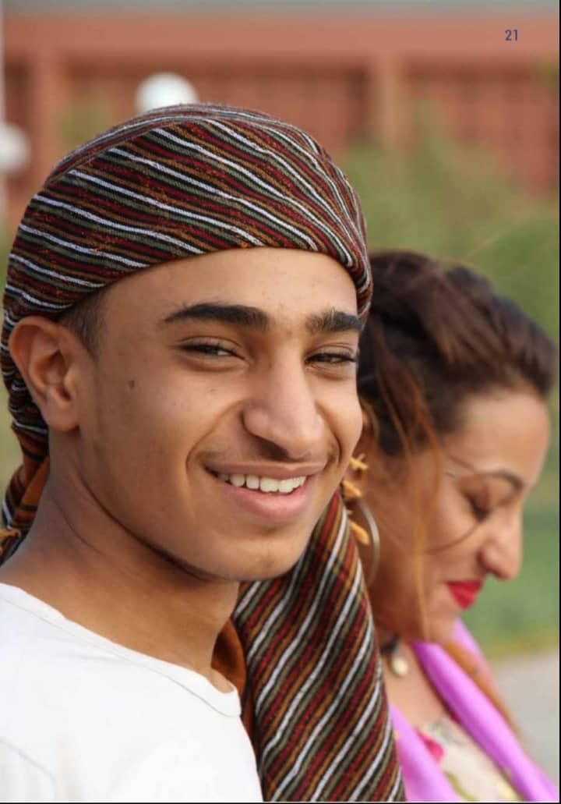

À propos
Dans un environnement en constante évolution, la formation continue s’avère plus que jamais la clé pour faire progresser votre carrière ou pour soutenir vos équipes de travail dans leur parcours professionnel. L’équipe du Service du développement professionnel offre des activités de perfectionnement
de courte durée et des programmes crédités dans une multitude de domaines pour vous permettre de développer de nouvelles compétences ou d’actualiser vos connaissances .
Information generales :
- Lire attentivement tout les explications ci-apres avant de tout sorte d'inscription au candidature.Les informations que vous souhaite obtenir sont preablement contenues dans ce guide.
- Votre candidature ne pourra etre jugee completer qu'au moment ou toutes les pieces administrative demandes
seront deposees en ligne sur la plateforme-e-condidat.
- N'attendez pas le dernier moment pour proceder a votre inscrption administrative.
- Il est possible de modifer votre dossier d'inscription pendant la periode d'inscription.
- Pour vous inscrire dans les meilleurs conditions,lisez attentivement les information de la faculte de votre choix.
Ce guide contient :
- Des information pour effectuer votre inscription
- La liste des pieces a fournir
- À propos de semestre preparative
- Date limite de l'inscription
|
ATTENTION : Imprimer le dossier d'inscrption lors de votre inscription a la rentrée
Votre inscription à l’université de Djibouti ne sera effectuée qu’a la rentre après :
-contrôle de la fiche,
-contrôle de pièces à fournir,
-paiement des droit d’inscription .
Suite à l’enregistrement de votre inscription en ligne et le paiement de frais d’inscription
l’administration vous envoileras un message de validation
NB : Le frais d’inscription est payé sur place
l’Université Laval propose des parcours universitaires adaptés à tous les profils.
|
À qui s'adresse la Formation Continue ?
La formation continue de l'université de Djibouti s’adresse aux personnes ayant interrompu leurs études et désireuses d'acquérir ou de développer de nouvelles compétences, d’acquérir de nouvelles qualifications ou de valoriser leurs expériences professionnelles.
L’offre de formation continue s’adresse donc :
- Aux salariés des secteurs privé et public
- Aux non-salariés (indépendants, professions libérales, commerçants…).
- Aux demandeurs d'emploi ou aux particuliers souhaitant suivre une formation de leur choix.
- Aux employeurs (entreprises, associations, organisations publiques…) souhaitant développer les compétences de leurs salariés.

À propos de semestre préparatoire
Un candidat inscrit à l'université de Djibouti doit remplir certaine condition tel que le semestre préparatoire. Le semestre préparatoire consiste une classe d'élimination pour les jeunes candidats. Ce semestre se déroule entre Janvier à Mai. Tout nouveau candidat doit passer par ce semestre et réussir avec une note supérieur ou égale à 10 pour être admis au 1ere année
A qui concerne le semestre préparatoire ?
Le semestre préparatoire concerne au nouveau Candidat qui n'ont pas passer au formation Initial .
Combien durée le semestre préparatoire ? Le semestre préparatoire durée environ 5 à 6 mois de janvier à mai .
Pièces à joindre obligatoirement à votre dossier de candidature (tout dossier incomplet sera rejeté)
Pièce n°1 - Diplôme Certifié conforme à l'orignal déposer le dernier diplôme que vous avez pris
Pièce n°1 - - Relevés de note le Candidat doit déposer ses derniers relevés de note du dernier diplôme. Pour les jeunes bachelier les relevés de note est celui du bac et pour les étudiant qui on passer au formation initial doit déposer ses derniers relevés passer au formation initial
Pièce n°1 - Photo Le candidat doit déposer ses 4 photo scannée
Pièce n°1 - Carte Nationale Le condidat doit déposer une carte national scannée
Pièce n°1 -Un CV détaillé rédiger à l'ordinateur
Pièce n°1-Une lettre de motivation détaillé rédiger a l'ordinateur et signe. Attention ! le contenu doit être personnel et éviter le plagiat
Pièce n°1-Attestation de Scolarité Ou carte d'etudiant
La date limite pour l'inscription est entre 01 Septembre jusqu'au 30 septembre
Chaque pièce doit être au format pdf
Combien coûte une inscription à la faculté ?
Les frais de scolarité à payer par les étudiants de licence et master pour leur inscription en faculté sont habituellement fixés chaque année. cet frais est 3000FDJ